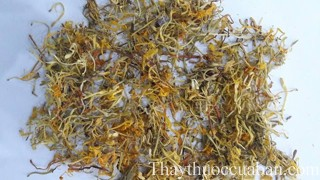

Tên khác
Tên dân gian: Vị thuốc Kim ngân hoa còn gọi Nhẫn đông hoa (Tân Tu Bản Thảo), Ngân hoa (Ôn Bệnh Điều Biện), Kim Ngân Hoa, Kim Ngân Hoa Lộ, Mật Ngân Hoa, Ngân Hoa Thán, Tế Ngân Hoa, Thổ Ngân Hoa, Tỉnh Ngân Hoa (Đông Dược Học Thiết Yếu),Song Hoa (Trung Dược Tài Thủ Sách), Song Bào Hoa (Triết Giang Dân Gian Thảo Dược), Nhị Hoa (Thiểm Tây Trung Dược Chí), Nhị Bảo Hoa (Giang Tô Nghiệm Phương ThảoDược Tuyển Biên), Kim Đằng Hoa (Hà Bắc Dược Tài).
Tên Khoa Học: Lonicera japonica Thunb.
Họ khoa học: Họ Cơm Cháy (Caprifolianceae).
Cây kim ngân hoa
(Mô tả, hình ảnh cây kim ngân hoa, phân bố, thu hái, thành phần hóa học, tác dụng dược lý...)

Mô Tả:
 Cây kim ngân hoa là một cây thuốc quý. Cây loại dây leo, thân có thể dài đến 9-10m, rỗng,
có nhiều cành, lúc non mầu xanh, khi gìa mầu đỏ nâu, trên thân có những vạch
chạy dọc. Lá mọc đối nhau, hình trứng dài. Phiến lá rộng 1,5 - 5cm, dài 38cm. Lá
cây quanh năm xanh tươi, mùa rét không rụng. Hoa khi mới nở có mầu trắng, nở ra
lâu chuyển thành mầu vàng. Hoa mọc ở kẽ lá, mỗi kẽ lá có 2 hoa mọc trên 1 cuống
chung. Lá bắc giống như lá cây nhưng nhỏ hơn. Tràng hoa cánh hợp, dài từ
2,5-3,5cm, chia làm 2 môi không đều. Môi rộng lại chia thành 4 thùy nhỏ, 5 nhụy
dính ở họng tràng, mọc thò dài ra ngoài hoa. Quả hình cầu, màu đen.Nụ hoa hình
gậy, hơi cong queo, dài 25cm, đường kính đạt đến 5mm. Mặt ngoài màu vàng đến
vàng nâu, phủ đầy lông ngắn. Mùi thơm nhẹ vị đắng. Mùa hoa: tháng 3-5, mùa quả:
tháng 6-8. Mọc hoang ở nhưng vùng rừng núi, ưa ẩm và ưa sáng.
Cây kim ngân hoa là một cây thuốc quý. Cây loại dây leo, thân có thể dài đến 9-10m, rỗng,
có nhiều cành, lúc non mầu xanh, khi gìa mầu đỏ nâu, trên thân có những vạch
chạy dọc. Lá mọc đối nhau, hình trứng dài. Phiến lá rộng 1,5 - 5cm, dài 38cm. Lá
cây quanh năm xanh tươi, mùa rét không rụng. Hoa khi mới nở có mầu trắng, nở ra
lâu chuyển thành mầu vàng. Hoa mọc ở kẽ lá, mỗi kẽ lá có 2 hoa mọc trên 1 cuống
chung. Lá bắc giống như lá cây nhưng nhỏ hơn. Tràng hoa cánh hợp, dài từ
2,5-3,5cm, chia làm 2 môi không đều. Môi rộng lại chia thành 4 thùy nhỏ, 5 nhụy
dính ở họng tràng, mọc thò dài ra ngoài hoa. Quả hình cầu, màu đen.Nụ hoa hình
gậy, hơi cong queo, dài 25cm, đường kính đạt đến 5mm. Mặt ngoài màu vàng đến
vàng nâu, phủ đầy lông ngắn. Mùi thơm nhẹ vị đắng. Mùa hoa: tháng 3-5, mùa quả:
tháng 6-8. Mọc hoang ở nhưng vùng rừng núi, ưa ẩm và ưa sáng.
Thu Hái, Sơ Chế:
Thu hái vào đầu mùa Hạ, lúc nụ sắp nở. Nên hái khoảng 9 - 10 giờ sáng (khi sương đã ráo). Đem thái mỏng, phơi hoặc sấy khô.
Bộ Phận Dùng:

Hoa mới chớm nở. Lá và dây ít dùng.
Mô Tả Dược Liệu:
Dây có nhiều lá, cuộn vòng hoặc chặt thành từng đoạn dài 35cm.
Lá mọc đối nhăn nheo, dài 47cm, rộng 24cm, hình trứng. Phiến lá dày, mặt trên màu lục đen, nhẵn hoặc có ít lông, mặt dưới mầu lục nhạt, có nhiều lông ngắn mịn và gân lá hình lông chim lồi lên,cuống lá dài. Hoa: nụ hoa hình ống dài 0,8-1,6cm, hơi cong, màu vàng nhạt, dưới nhỏ, đường kính 11,25mm, trên phồng to, đường kính 23mm. Lác đác có hoa mới nở, dưới nhỏ, trên loe hình môi. Mặt ngoài có lông trắng nhỏ mịn (soi kính lúp), phía dưới có đài nhỏ hình chén 5 răng, màu nâu vàng, dài khoảng 11,5mm. Chất nhẹ, hơi giòn, mùi thơm, vị hơi đắng (Dược Tài Học).
Bào Chế:
+ Hoa tươi: gĩa nát, vắt nước, đun sôi, uống.
+ Hoa khô: sắc uống hoặc sấy nhẹ lửa cho khô, tán bột.
+ Hoa tươi hoặc khô đều có thể ngâm với rượu theo tỉ lệ 1/5 để uống (Phương Pháp Bào Chế Đông Dược).
Bảo Quản:
Dễ hút ẩm, mốc, biến màu, mất hương vị. để nơi khô ráo, tránh ẩm, đựng trong hũ có lót vôi sống.
Thành Phần Hóa Học:
+ Luteolin, Inositol, Tannin (Trung Dược Học).
+ Hoa chứa Scolymozid (Lonicerin), 1 số Carotenoid (S Caroten, Cryptoxantin, Auroxantin). Lá chứa Loganin (Tài Nguyên Cây Thuốc Việt Nam).
+ Chlorogenic acid, Isochlorogenic acid (Lý Bá Đình, Trung Thảo Dược 1986, 17 (6): 250).
+ Ginnol, b-Sitosterol, Stigmasterol, b-Sitosterol-D-Glucoside, Stimasteryl-D-Glucoside (Sim K S và cộng sự, C A 1981,94: 52765p).
Tác Dụng Dược Lý:
 + Tác Dụng Kháng Khuẩn: nước sắc hoa Kim ngân
có tác dụng ức chế mạnh đối với tụ cầu khuẩn, trực khuẩn thương hàn, trực khuẩn
lỵ Shiga. Nước sắc có tác dụng mạnh hơn các dạng bào chế khác (Tài Nguyên Cây
Thuốc Việt Nam).
+ Tác Dụng Kháng Khuẩn: nước sắc hoa Kim ngân
có tác dụng ức chế mạnh đối với tụ cầu khuẩn, trực khuẩn thương hàn, trực khuẩn
lỵ Shiga. Nước sắc có tác dụng mạnh hơn các dạng bào chế khác (Tài Nguyên Cây
Thuốc Việt Nam).
Khi nghiên cứu tác dụng kháng khuẩn in vitro
bằng các phương phápkhuyếch tán và hệ nồng độ, người ta thấy nước sắc cô đặc
100% của hoa Kim ngân có tác dụng kháng khuẩn mạnh đối với các trực khuẩn lỵ,
dịch hạch, thương hàn, cận thương hàn, liên cầu khuẩn tan máu, phẩy khuẩn tả.
Tác dụng yếu hơn đối với các trực khuẩn bạch hầu, E.Coli, Phế cầu, Tụ cầu khuẩn
vàng. Nước sắc lá Kim ngân với nồng độ 201,2% ức chế trực khuẩn Shiga, với nồng
độ 2050% ức chế trực khuẩn cận thương hàn, nồng độ 100% có tác dụng đối với tiêu
cầu khuẩn (Tài Nguyên Cây Thuốc Việt Nam).
+ Tác Dụng Trên Chuyển Hóa Chất Béo: Kim ngân có tác dụng tăng cường chuyển hóa các chất béo (Tài Nguyên Cây Thuốc Việt Nam).
+ Tác Dụng Trên Đường Huyết: nước sắc hoa Kim ngân cho uống có tác dụng ngăn chặn choáng phản vệ chuột lang. Ở chuột lang uống Kim ngân, số lượng và tính chất các dưỡng bào ở mạc treo ruột ít thay đổi. Lượng Histamin ở phổi chuột lang bị choáng phản vệ cao gấp rưỡi so với chuột lang bình thường và chuột lang uống Kim ngân trước khi gây choáng (Tài Nguyên Cây Thuốc Việt Nam).
+ Tác Dụng Kháng Khuẩn: Thuốc có tác dụng ức chế nhiều loại vi khuẩn: tụ cầu vàng, liên cầu khuẩn, liên cầu khuẩn dung huyết, phế cầu khuẩn, trực khuẩn lỵ, trực khuẩn ho gà, trực khuẩn thương hàn, trực khuẩn mủ xanh, não cầu khuẩn, trực khuẩn lao... cùng các loại nấm ngoài da, Spirochete, virus cúm (Trung Dược Học).
+ Tác Dụng Kháng Viêm: làm giảm chất xuất tiết, giải nhiệt và làm tăng tác dụng thực bào của bạch cầu (Trung Dược Học).
+ Tác Dụng Hưng Phấn Trung Khu Thần Kinh: cường độ bằng 1/6 của cà phê (Trung Dược Học).
+ Tác dụng chống lao: Nước sắc Kim ngân hoa in Vitro có tác dụng chống Mycobacterium tuberculosis. Cho chuột uống nướcsắc Kim ngân hoa rồi cho chíchvi khuẩn lao cho thấy ít thay đổi ở phổi hơn lô đối chứng (Chinese Hebral Medicine).
+ Kháng Virus: Nước sắc Kim ngân hoa có thể làm giảm sức hoạt động của PR8 ở virus cúm nhưng không có tác dụng ở phôi gà con đã tiêm chủng (Chinese Hebral Medicine).
+ Tác dụng chuyển hóa Lipid: cho chuột béo phì dùng lượng lớn Cholesterol vỗ béo cho chuột đồng thời cho uống nướcsắc Kim ngân hoa, mức Cholesterol trong máu của chúng thấp hơn so với nhóm đối chứng (Chinese Hebral Medicine).
+ Trong nhãn khoa: theo dõi 36 bệnh nhân không chọn trước, nướcsắc Kim ngân hoa được dùng cho những trường hợp kết mạc viêm mạn, giác mạc loét (Chinese Hebral Medicine).
+ Trong điều trị bệnh nhiễm khuẩn: dùng dịch chiết Kim ngân hoa chích vào huyệt hoặcvào bắp có hiệu quả trong điều trị bệnh phổi viêm cấp nặng và lỵ. Cũng dùng trong 1 số trương hợp ruột dư viêm có mủ, quai bị lở ngứa (Chinese Hebral Medicine).
+ Làm hạ Cholesterol trong máu (Trung Dược Học).
+ Tăng bài tiết dịch vị và mật (Trung Dược Học).
+ Tăng tác dụng thu liễm do có chất Tanin (Sổ Tay Lâm Sàng Trung Dược).
+ Có tác dụng lợi tiểu (Sổ Tay Lâm Sàng Trung Dược).
Độc Tính:
Chuột nhắt trắng, sau khi được cho uống nước sắc Kim ngân liên tục 7 ngày với liều gấp 150 lần liều điều trị cho người, vẫn sống bình thường, giải phẫu các bộ phận không thay đổi gì đặc biệt (Tài Nguyên Cây Thuốc Vị Thuốc Việt Nam).
Vị thuốc kim ngân hoa
(Công dụng, liều dùng, quy kinh, tính vị...)
Tính Vị:

+ Vị đắng, tính hàn (Trấn Nam Bản Thảo).
+ Vị đắng, ngọt, khí bình, tính hơi hàn, không độc (Bản Thảo Dược Tính Đại Toàn).
+ Vị ngọt, tính hàn (Lâm Sàng Thường Dụng Trung Dược Thủ Sách).
+ Vị ngọt, tính hàn (Đông Dược Học Thiết Yếu).
Quy Kinh:
+ Vào kinh túcDương minh Vị, túc Thái âm Tỳ (Đắc Phối Bản Thảo).
+Vào kinh Phế (Lôi Công Bào Chích Luận).
+ Vào kinh Phế, Vị (Trung Dược Học).
+ Vào kinh Phế, Vị, Tâm (Lâm Sàng Thường Dụng Trung Dược Thủ Sách).
+Vào kinh Phế, Vị, Tâm Tỳ (Đông Dược Học Thiết Yếu).
Tác Dụng, Chủ Trị:
+ Thanh nhiệt, giải chư sang (Trấn Nam Bản Thảo).
+ Là thuốc chủ yếu để chỉ tiêu khát (Y Học Nhập Môn).
+ Tiêu thủng, tán độc, bổ hư, liệu phong, uống lâu ngày tăng tuổi thọ (Lôi Công Bào Cês Dược Tính Giải).
+ Khu phong, trừ thấp, tán nhiệt, liệu tý, tiểu thủng, chỉ lỵ (Bản Thảo Hối Ngôn).
+ Thanh nhiệt, giải độc. Trị ôn bệnh phát nhiệt, nhiệt lỵ, rôm sẩy, mụn nhọt, ghẻ lở, hắc lào, giang mai độc (Trung Quốc Dược Học Đại Từ Điển).
+ Thanh nhiệt, giải độc (Lâm Sàng Thường Dụng Trung Dược Thủ Sách).
+ Thanh nhiệt, giải độc, giải trừ các khí ôn dịch, uế trọc tà. Trị ôn bệnh phát sốt, nhiệt lỵ, rôm sẩy, mụn nhọt, hắc lào, giang mai (Đông Dược Học Thiết Yếu).
Liều Dùng: 12 – 20g.
Ứng dụng lâm sàng của vị thuốc Kim ngân hoa

Trị thái âm ôn bệnh mới phát, tà khí ở Phế vệ, sốt mà không sợ lạnh, sáng sớm khát nước:
Liên kiều 40g, Ngân hoa 40g, Khổ cát cánh 24g, Bạc hà 24g, Trúc diệp 16g, Cam thảo (sống) 20g, Kinh giới tuệ 16g, Đạm đậu xị 20g, Ngưu bàng tử 24g. Tán thành bột. Mỗi lần dùng 24g uống với nước sắc Vi căn tươi (Ngân Kiều Tán – Ôn Bệnh Điều Biện).
Trị mụn nhọt sắc đỏ biến thành đen:
Kim ngân hoa (cả cành, lá) 80g, Hoàng kỳ 160g, Cam thảo 40g. cắt nhỏ, dùng 1 cân rượu ngâm, chưng 2-3 giờ, bỏ bã, uống dần (Hồi Sang Kim Ngân Hoa Tán – Hoạt Pháp Cơ yếu).
Trị phát bối, nhọt độc:
Kim ngân hoa 160g, Cam thảo (sao) 40g. Tán bột. Mỗi lần dùng 16g, sắc với 1 chén rượu, 1 chén nước, còn 1 chén, bỏ bã, uống nóng (Vệ Sinh Gia Bảo).
Trị phát bối, ung nhọt mới phát:
Kim ngân hoa nửa cân, nước 10 chén. Sắc còn 2 chén. Thêm Đương quy 80g, sắc còn 1 chén, uống (Động Thiên Áo Chỉ).
Trị sữa không xuống, kết lại gây nên vú sưng đau, đau chịu không nổi:
Kim ngân hoa, Đương quy, Hoàng kỳ (nướng mật), Cam thảo đều 10g. Sắc, thêm ½ chén rượu, uống (Kim Ngân Hoa Tán – Tế Âm Cương Mục).
Trị vú có khối kết, sưng to, đỏ, chảy nước:
Kim ngân hoa, Hoàng kỳ (sống) đều 20g, Đương quy 32g, Cam thảo 4g, Lá Ngô đồng 50 lá. Nước ½ chén, rượu ½ chén, sắc uống (Ngân Hoa Thang – Trúc Lâm Nữ Khoa).
Trị mụn nhọt, lở ngứa:
Hoa kim ngân 20g, Cam thảo 12g, sắc uống. Bên ngoài dùng Hoa kim ngân tươi trộn với rượu đắp chung quanh chỗ đau (Kim Ngân Hoa Tửu - Lâm Sàng Thường Dụng Trung Dược Thủ Sách).
Trị ruột dư viêm cấp hoặc phúc mạc viêm:
Kim ngân hoa 120g, Mạch môn 40g, Địa du 40g, Hoàng cầm 16g, Cam thảo 12g, Huyền sâm 80g, Ý dĩ nhân 20g, Đương qui 80g, sắc uống (Thanh Trường Ẩm - Lâm Sàng Thường Dụng Trung Dược Thủ Sách).
Trị họng đau, quai bị:
Kim ngân hoa 16g, Liên kiều 12g, Trúc diệp 12g, Ngưu bàng tử 12g, Cát cánh 8g, Kinh giới tuệ 8g, Bạc hà 4g, Cam thảo 4g, Đậu xị 18g, sắc uống (Ngân Kiều Tán- Lâm Sàng Thường Dụng Trung Dược Thủ Sách).
Dự phòng não viêm:
Kim ngân hoa 20g, Bồ công anh 20g, Hạ khô thảo 20g, sắc uống (Lâm Sàng Thường Dụng Trung Dược Thủ Sách).
Trị ung nhọt, dị ứng, mẩn ngứa:
Hoa kim ngân 10g, Ké đầu ngựa 4g, nước 200ml. Sắc còn 100ml, chia 2 lần uống trong ngày (Dược Liệu Việt Nam).
Trị mụn nhọt, lở ngứa:
Kim ngân hoa 6g, Cam thảo 3g, nước 200ml. Sắc còn 100ml, chia 23 lần uống trong ngày (Tài Nguyên Cây Thuốc Việt Nam).
Trị dị ứng, mụn nhọt, lở ngứa:
Kim ngân 6g (hoa) hoặc 12g (lá và cành), nước 100ml, sắc còn 10ml, thêm 4g đường. Cho vào ống hàn kín, hấp tiệt trung để bảo quản. Nếu dùng ngay thì không cần đóng ống, chỉ cần đun sôi, giữ sôi trong 15 phút đến 1/2 giờ là uống được . Ngườilớn uống 24 liều trên, trẻ nhỏ 12 liều (Tài Nguyên Cây Thuốc Việt Nam).
Trị cảm cúm:
Hoa kim ngân 6g, Cam thảo 3g, nước 200ml. Sắc còn 100ml, chia 2-3 lần uống trong ngày (Tài Nguyên Cây Thuốc Việt Nam).
Trị cảm cúm:
Kim ngân 4g, Tía tô 3g, Kinh giới 3g, Cam thảo đất 3g, Cúc tần hoặc Sài hồ nam 3g, Mạn kinh 2g, Gừng 3 lát. Sắc uống (Tài NguyênCây Thuốc Việt Nam).
Trị sởi:
Hoa kim ngân 30g, Cỏ ban 30g. Dùng tươi, gĩa nhỏ, thêm nước, gạn uống. Có thể phơi khô, sắc uống (Tài Nguyên Cây Thuốc Việt Nam)
Tham Khảo
+ Được Đương quy có tác dụng trị nhiệt độc huyết lỵ (Đắc Chân Bản Thảo).
+ Được Hoàng kỳ, Đương quy, Cam thảo, có tác dụng thác ung thủng. Được Phấn thảo có tác dụng giải nhiệt độc hạ lợi (Đắc Phối Bản Thảo).
+ Ông Lý Thời Trân cho rằng Kim ngân người xưa cho là vị thuốc cốt yếu trong việc trị phong, trừ được chứng trướng mãn, trị được lỵ tật mà sau này người ta không ai để ý đến, mãi về sau lại có người bảo là vị thuốc cốt yếu trong các vị thuốc trị những chứng ung nhọt mà người xưa chưa từng nói đến.... Xét trong sách ‘Ngoại Khoa Tinh Yếu’ ông Trần Tử Minh có nói: Rượu Kim ngân trị bệnh ung thư mới phát rất thần hiệu vô biên (Trung Quốc Dược Học Đại Từ Điển).
+ Kim ngân đâu đâu cũng có, ở nhà quê người ta trồng rất nhiều, dây nó leo cuốn vào cây cho nên gọi là Tả triền đằng. Cây và lá của nó qua mùa đông không rụng vì vậy gọi là Nhẫn đông đằng (Kim Chỉ Nam Dược Tính).
+ Hiệu lực giải biểu của Kim ngân hoa kém hơn Cát căn nhưng lại thanh nhiệt hay hơn Cát cănNgân hoa sao cháy có thể dùng để trị nhiệt độc huyết lỵ vào phần huyết, thanh huyết nhiệt. Nước cất từ Kim ngân hoa có thể trợ vị, tán thử, thanh nhiệt giải độc. Kim ngân hoa là vị thuốc chủ yếu trị chứng dương đỏ sưng thuộc ngoại khoa, không nên sử dụng đối với chứng âm. Dây Kim ngân hoa còn gọi là Nhẫn đông đằng, có thể thanh phong nhiệt rong kinh lạc và làm yên được đau nhức Rong kinh “ (Đông Dược Học Thiết Yếu).
+ Dây Kim ngân còn gọi là Nhẫn đông đằng công dụng giống như hoa nhưng kém hơn, có tác dụng thanh nhiệt ở kinh lạc, giảm đau. Kim ngân hoa sao đen gọi là Kim ngân hoa thán có tác dụng lương huyết, trị lỵ xích lỵ, tiêu ra máu (Lâm Sàng Thường Dụng Trung Dược Thủ Sách).
Phân biệt:
Ngoài Kim ngân nói trên, người ta còn dùng một số loại Kim ngân sau:
1- Kim Ngân Dại (Lonicera dasystyla Rehd). Lá hình trứng nhọn dài 28cm, rộng 14cm. Mép lá trên nguyên, lá gốc chia thùy. Phiến lá mỏng, mặt trên nhẵn, mặt dưới phủ lông mịn. Hoa ống tràng, thẳng hoặc hơi cong, dài 1,8 - 2,2cm. Bầu nhẵn.
2- Kim Ngân Lông (Lonicera cambodiaha Pierre): Lá hình thuôn hơi dài, dài khoảng 5 - 12cm, rộng 36cm. Mép lá nguyên cuộn xuống dưới mặt lá. Phiến lá khá dày, mặt trên nhẵn, trừ cuối gân giữa, mặt dưới lông xù xì, nhất là ở gân lá. Hoa ống tràng, thẳng hoặc hơi cong, dài 56cm. Bầu có nhiều lông.
3- Lonicera confusa D C. Lá hình thuôn dài, dài 46cm, rộng 1,5 - 3cm. Mép lá nguyên. Phiến lá hơi dầy, mặt trên nhẵn, mặt dưới có nhiều lông ngắn mịn, hoa ống tràng thẳng hoặc hơi cong, dài 3cm. Bầu có lông (Tài Nguyên Cây Thuốc Việt Nam).
Kiêng Kỵ:
+ Tỳ Vị hư hàn, tiêu chảy không phải do nhiệt, mồ hôi ra nhiều: cẩn thận khi dùng (Đông Dược Học Thiết Yếu).
+ Tỳ vị hư hàn, tiêu chảy, mụn nhọt loại âm tính hoặc sau khi vỡ mủ mà khí lực yếu,mủ trong lỏng: không nên dùng (Lâm Sàng Thường Dụng Trung Dược Thủ Sách).
.jpg)
Hiện tại Phòng khám Đông y Nguyễn Hữu Toàn có bán vị thuốc kim ngân hoa GACP-WHO đủ điều kiệntiêu chuẩn xuất khẩu sang thị trường Mỹ, Hồng Kong, và Châu Âu. Thuốc đạt tiêu chuẩn GACP-WHO có nghĩa là dược liệu đạt tiêu chuẩn thực hành tốt trồng trọt và thu hái cây thuốc theo khuyến cáo của Tổ chức Y tế Thế giới.

Hình ảnh vị thuốc kim ngân hoa đạt tiêu chuẩn GACP-WHO
 Chế độ ăn uống kiêng kị cho bệnh viêm họng
Chế độ ăn uống kiêng kị cho bệnh viêm họng
 Bài thuốc chữa viêm phế quản mãn tính
Bài thuốc chữa viêm phế quản mãn tính
Nơi mua bán vị thuốc KIM NGÂN HOA đạt chất lượng ở đâu?
Trước thực trạng thuốc đông dược kém chất lượng, nguồn gốc không rõ ràng,... xuất hiện tràn lan trên thị trường, làm ảnh hưởng tới hiệu quả điều trị cũng như ảnh hưởng tới sức khỏe của bệnh nhân. Việc lựa chọn những địa chỉ uy tín để mua thuốc đông dược là rất quan trọng và cần thiết. Vậy khách hàng có thể mua vị thuốc KIM NGÂN HOA ở đâu?
KIM NGÂN HOA là vị thuốc nam quý, được sử dụng rộng rãi trong YHCT. Hiện tại hầu hết các cửa hàng thuốc đông dược, phòng khám đông y, phòng chẩn trị YHCT... đều có bán vị thuốc này. Tuy nhiên người mua nên chọn những địa chỉ có uy tín, đảm bảo chất lượng, có giấy phép hoạt động để mua được vị thuốc đạt chất lượng.
Với mong muốn bệnh nhân được sử dụng những loại dược liệu đúng, chất lượng tốt, phòng khám Đông y Nguyễn Hữu Toàn không chỉ là đia chỉ khám chữa bệnh tin cậy, uy tín chất lượng mà còn cung cấp cho khách hàng những vị thuốc đông y (thuốc nam, thuốc bắc) đúng, chuẩn, đạt chuẩn chất lượng. Các vị thuốc có trong tiêu chuẩn Dược điển Việt Nam đều được nghành y tế kiểm nghiệm đạt chất lượng tiêu chuẩn.
Vị thuốc KIM NGÂN HOA được bán tại Phòng khám là thuốc đã được bào chế theo Tiêu chuẩn NHT.
Giá bán vị thuốc KIM NGÂN HOA tại Phòng khám Đông y Nguyễn Hữu Toàn: 280.000vnd/1kg
Tùy theo thời điểm giá bán có thể thay đổi.
+ Khách hàng có thể mua trực tiếp tại địa chỉ phòng khám: Cơ sở 1: Số 481 lô 22 Lê Hồng Phong, Phường Gia Viên, Thành phố Hải Phòng
Tag: cay Kim ngan hoa, vi thuoc Kim ngan hoa, cong dung Kim ngan hoa, Hinh anh cay Kim ngan hoa, Tac dung Kim ngan hoa, Thuoc nam
Thaythuoccuaban.com Tổng hợp
*************************